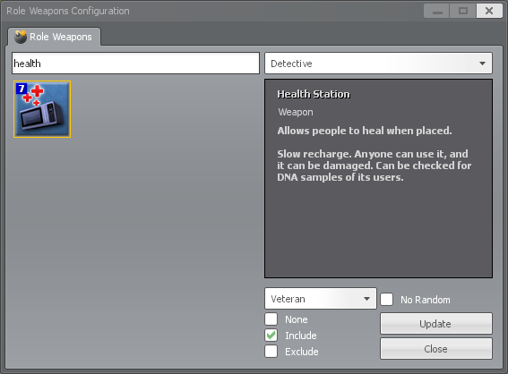

Table of Contents
Configuration by UI
The easiest way to configure the role shops is via a user interface usable by administrators directly from a running game. To open the interface, run the ttt_roleweapons command from your console. The window that opens should look something like this:

Explanation
This window was made to closely resemble the role equipment shop so parts of it should be fairly intuitive to use. For example: the search bar, the weapon list, and the weapon info panel are all directly copied from the weapon shop.
Apart from those familiar pieces, this window also adds a few more controls specifically for configuring the role weapons shops:
- Search Role - This dropdown in the top right of the window allows you to choose which role's shop to display and search through
- The bottom right of the window houses the controls for targeting and saving the configuration changes
- Save Role - This dropdown allows you to choose which role you would update
- Weapon State Checkboxes - These checkboxes allow you to change how a weapon behaves in the role's shop
- None - Use the default buying configuration for the weapon
- Include - Mark this weapon as explicitly buyable
- Exclude - Mark this weapon as explicitly NOT buyable
- No Random - Ensure this weapon stays in the shop, regardless of randomization
- Update - Save the configuration changes
- Close - This button will close the window, discarding any unsaved changes
Example
To help understand the functionality of this window it might be easier to walk through an example: we are going to find the Health Station (which we know the Detective can buy) and add it to the Veteran's shop. The Veteran gets a shop when they are activated, but only if weapons are actually available to them. This is where the role weapons system comes into play.
First things first: we open the window and select "Detective" from the "Search Roles" dropdown. From there we can either scroll through the list of weapons or use the search text box to search for "health". We then choose "Veteran" from the "Save Role" dropdown and click the "Include" checkbox. With all that done the window should look like this:
 Veteran" style="max-width: 100%;">
From here, the last step is to click the "Update" button and we're done -- The Veteran now has the ability to buy a Health Station.
Configuration by Files
If you cannot or do not want to use the in-game UI to set up the role shop, it is also doable by manual file manipulation. This may be useful for server operators using Docker who want to have the configurations embedded in their server image.
NOTE: Using the configuration UI still creates and deletes files in the backend. Given that, you can use the UI on your local game and then copy the files to a server or Docker image build as needed.
Preparing a Role for Configuration
Before a role's shop can be modified, the initial folder and file structure will need to be created. Follow the steps below to accomplish this:
- If the roleweapons folder does not already exist in garrysmod/data, create it.
- If the there is no .json file for the role you want to modify, create an empty text file and rename it to be {rolename}.json. For example: detective.json
- Make sure the file extension is .json and not .json.txt. By default, Windows hides known file extensions like .txt so be careful.
- Once the .json file is created, open it in a text editor (like Notepad++) and copy the following empty data structure into it:
{"Excludes":[],"Buyables":[],"NoRandoms":[]}
Weapons
Adding Weapons
To add weapons to a role (that already has a shop), modify the garrysmod/data/roleweapons/{rolename}.json file (using a text editor like Notepad++) and add the class name of the weapon wrapped in double quotes (e.g. "weapon_ttt_somethingcool") to the Buyables array. For example, {"Excludes":[],"Buyables":["weapon_ttt_somethingcool"],"NoRandoms":[]}
Also note the ttt_shop_* ConVars that are available above which can help control some of the role weapon shop lists.
Removing Weapons
At the same time, there are some workshop weapons that are given to multiple roles that maybe you don't want to be available to certain roles. In order to handle that case, the ability to exclude weapons from a role's weapon shop has been added.
To remove weapons from a role's shop, modify the garrysmod/data/roleweapons/{rolename}.json file (using a text editor like Notepad++) and add the class name of the weapon wrapped in double quotes (e.g. "weapon_ttt_somethingcool") to the Excludes array. For example, {"Excludes":["weapon_ttt_somethingcool"],"Buyables":[],"NoRandoms":[]}
Bypassing Weapon Randomization
With the addition of the Shop Randomization feature (and the ttt_shop_random_* ConVars), weapons may not always appear in the shop (which is the point). If, however, you want certain weapons to always be in the shop while other weapons are randomized, the ability to bypass shop randomization for a weapon in a role's weapon shop has been added.
To stop a weapon from being removed from a role's shop via randomization, modify the garrysmod/data/roleweapons/{rolename}.json file (using a text editor like Notepad++) and add the class name of the weapon wrapped in double quotes (e.g. "weapon_ttt_somethingcool") to the NoRandoms array. For example, {"Excludes":[],"Buyables":[],"NoRandoms":["weapon_ttt_somethingcool"]}
Finding a Weapon's Class
To find the class name of a weapon to use above, follow the steps below
- Start a local server with TTT as the selected gamemode
- Spawn 1 bot by using the bot command in console
- Obtain the weapon whose class you want. If it is already available to buy from a certain role's shop, either force yourself to be that role via the ttt_force_* commands or via a ULX plugin.
- Run the following command in console to get a list of all of your weapon classes:
lua_run PrintTable(player.GetHumans()[1]:GetWeapons())
Equipment
Equipment are items that a role can use that do not take up a weapon slot, such as the body armor or radar.
Adding Equipment
To add equipment items to a role (that already has a shop), modify the garrysmod/data/roleweapons/{rolename}.json file (using a text editor like Notepad++) and add the name of the equipment item wrapped in double quotes (e.g. "bruh bunker") to the Buyables array. For example, {"Excludes":[],"Buyables":["bruh bunker"],"NoRandoms":[]}
Removing Equipment
Similarly there are some equipment items that you want to prevent a specific role from buying. To handle that case, the addon has the ability to exclude specific equipment items from the shop in a similar way.
To remove equipment from a role's shop, modify the garrysmod/data/roleweapons/{rolename}.json file (using a text editor like Notepad++) and add the name of the equipment item wrapped in double quotes (e.g. "bruh bunker") to the Excludes array. For example, {"Excludes":["bruh bunker"],"Buyables":[],"NoRandoms":[]}
Finding an Equipment Item's Name
To find the name of an equipment item to use above, follow the steps below
- Start a local server with TTT as the selected gamemode
- Spawn 1 bot by using the bot command in console
- Obtain the equipment item whose name you want. If it is already available to buy from a certain role's shop, either force yourself to be that role via the ttt_force_* commands or via a ULX plugin.
- Run the following command in console to get a full list of your equipment item names:
lua_run GetEquipmentItemById(EQUIP_RADAR); lua_run for id, e in pairs(EquipmentCache) do if player.GetHumans()[1]:HasEquipmentItem(id) then print(id .. " = " .. e.name) end end